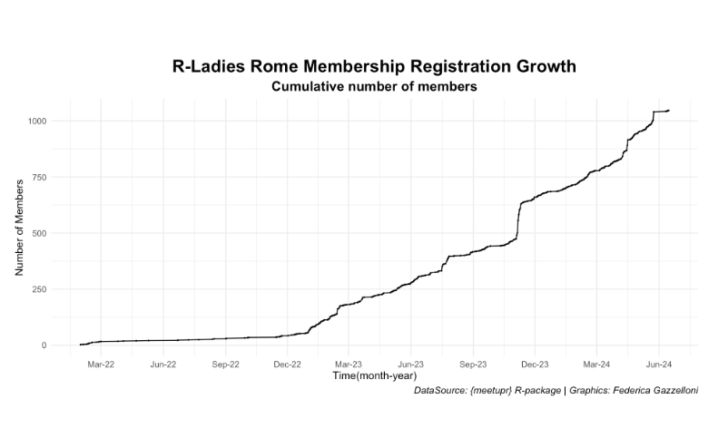

Federica Gazzelloni, co-organizer of R-Ladies Rome, recently spoke with the R Consortium about the fast-growing R community in Rome. The group collaborates with R user groups worldwide and has successfully attracted a diverse audience to its events. Federica also contributes to the R community through package development and is currently working on a book about using R for health metrics and tracking the spread of infectious diseases.

The group is hosting an online event titled “Building Reproducible Pipelines with R, Docker, and Nix” on the 29th of July. R users from around the world are invited to attend this event.

Please share about your background and involvement with the RUGS group.
I am Federica Gazzelloni, an actuary and statistician interested in health studies. I am writing a book about health metrics and the spread of infectious diseases. As the lead organizer of R-Ladies Rome, one of the R user groups sponsored by the R Consortium, I am grateful for the support that enables us to organize monthly talks, tutorials, and workshops. Our events provide an inclusive and accessible learning environment free of charge, featuring exciting speakers and various engagement opportunities. Additionally, we have held events in partnership with R-Ladies New York, R-Ladies Paris, and Tunis R User Group and created a branded website: rladiesrome.org!
R-Ladies Rome started in 2023 and has grown significantly since then. Our events consistently reach a substantial audience. For instance, our latest event with Isabella Velasquez garnered over 100 RSVPs. During Data Viz Month, we received unexpected attention from the open tech community of learners. Our followers on Meetup have reached over 1.1k, and our social media presence is steadily growing.
Can you share what the R community is like in Rome?

Since the kick-off of the chapter in 2023, R-Ladies Rome has played a pivotal role in fostering a dynamic community. We have successfully brought together an international group of R enthusiasts, ranging from beginners to experienced data scientists, creating a supportive and engaging environment for all. The popularity of the R language within the open source community, particularly for statistical analysis and medical research, is evident in Rome. R offers a wide range of libraries that can be easily applied to various topics, making it very convenient for users. Although Python is gaining attention in research and providing another accessible option for statistical analysis, the medical statistical community seems to prefer R over Python due to its extensive capabilities and strong community support.
Our events have consistently attracted significant attention and participation. For example, our latest event with Isabella Velasquez garnered over 100 RSVPs. We have also received unexpected attention during Data Viz Month from the open tech community of learners. Our Meetup followers have reached over 1.1k, and our social media presence is steadily growing.
The R community in Rome is expected to grow, with R-Ladies Rome at its heart, driving engagement and promoting the use of R for various applications. We are excited to continue growing and evolving, providing valuable learning opportunities and fostering connections within the community.

.png)
What trends do you currently see in R language?
We have reviewed all the events that R-Ladies’ groups have organized in the past years and, after considering the rebranding of RStudio to Posit PBC and RMarkdown to Quarto, realized that several exciting trends in the R language are shaping its usage and development within the data science community. Analyzing event titles, attendee numbers, and activity on past recordings, we found that events containing “Introduction” or “Tutorials” impact learners most, highlighting the growing interest in learning R for data analytics, reproducible research, and dynamic reporting.
Moreover, integrating R with other programming languages and platforms is gaining significant attention. The interoperability between R and languages like Python, HTML, or Java allows users to enhance their skills across multiple tools within a single environment. This has expanded R’s capabilities, making it a versatile choice for a diverse range of users.
.png)
Any techniques you recommend using for planning for or during the event? (Github, zoom, other) Can these techniques be used to make your group more inclusive to people that are unable to attend physical events in the future?
We’ve been using Canva extensively for various tasks and found ChatGPT very helpful in crafting storytelling content. To enhance the planning and execution of events, Copilot assists with its excellent collaborative typing, saving time. Additionally, having a Meetup pro-account is valuable, mainly as R-Ladies Rome is part of the broader R Ladies group. It helps us connect with a wider audience while using Google Forms aids communication and prevents missing information. We also use YouTube and have our channel, which is very useful for sharing past events recordings and making them available online to ensure accessibility for those unable to attend live events.
You have a Meetup on “Building reproducible pipelines with R, Docker and Nix”, can you share more on the topic covered? Why this topic?
We have an upcoming Meetup titled “Building reproducible pipelines with R, Docker and Nix” , featuring speaker Bruno Rodrigues. This topic was chosen based on feedback from our organizers, Silvana Acosta and Rafael Ribeiro, who polled our audience to identify a favorite speaker. Bruno Rodrigues emerged as a popular choice, highlighting the growing interest in robust and reproducible data science workflows.
In this session, Bruno Rodrigues will guide us through setting up reproducible data pipelines using R, Docker, and Nix. These tools ensure that data analyses are consistent and can be easily shared and replicated across different environments. By learning to use Docker and Nix alongside R, our community members will gain valuable skills to enhance the reliability and reproducibility of their data science projects. This event aligns with our mission to provide practical and impactful learning opportunities that meet the evolving needs of the data science community.
Please share about a project you are currently working on or have worked on using the R language. Goal/reason, result, anything interesting, especially related to the industry you work in?
One of the key projects I am currently working on involves a quarto-book titled “Health Metrics and the Spread of Infectious Diseases with R”, which CRC Press will publish at the end of this year. This book aims to provide comprehensive insights into the intersection of health metrics, such as DALYs and infectious disease dynamics, using advanced statistical methods and machine learning techniques in R. The goal is to equip readers with the knowledge and tools to analyze and interpret health data effectively, thereby contributing to the broader field of public health.
In addition to the book, I have developed a couple of R data packages to aid in data analysis and visualization. One is “oregonfrogs,” which is expected to go on CRAN very soon. This package focuses on classification modeling for detecting frog habitats, utilizing spatial techniques. It provides a valuable function, longlat_to_utm(). The development of these packages showcases R’s versatility in handling complex ecological data and emphasizes the importance of open source tools in advancing scientific research. Through these projects, I aim to demonstrate the practical applications of R in public health and environmental science, fostering a deeper understanding and appreciation of data-driven methodologies.
How do I Join?
R Consortium’s R User Group and Small Conference Support Program (RUGS) provides grants to help R groups organize, share information, and support each other worldwide. We have given grants over the past four years, encompassing over 68,000 members in 33 countries. We would like to include you! Cash grants and meetup.com accounts are awarded based on the intended use of the funds and the amount of money available to distribute.
gd2md-html: xyzzy Mon Jul 29 2024